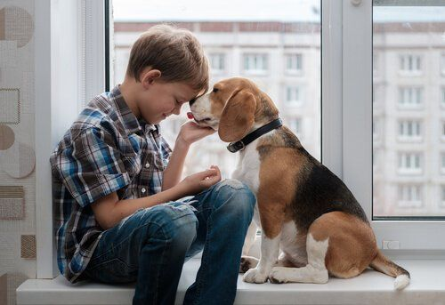

Historia y Características
El Beagle es una raza de perro de origen inglés que se remonta a la antigua Grecia, pero se consolidó en el Reino Unido en el siglo XIX, donde fue criado para la caza menor, especialmente para rastrear liebres y conejos. Este perro de tamaño mediano es conocido por su excelente sentido del olfato, que lo convierte en uno de los mejores sabuesos de caza. Los Beagles tienen un cuerpo robusto y compacto, alcanzan una altura de entre 33 y 40 cm, y pesan entre 9 y 14 kg. Su pelaje es corto y denso, generalmente tricolor (blanco, negro y marrón), aunque también pueden encontrarse en otros colores. Sus grandes orejas caídas y su mirada expresiva y amable los hacen irresistibles como mascotas.
Personalidad y Comportamiento

El Beagle es un perro de carácter vivaz y extrovertido, lo que lo convierte en un compañero ideal para familias. Es un animal muy social, amigable con los niños y otras mascotas, y disfruta de la compañía humana. Sin embargo, su naturaleza curiosa y su fuerte instinto de rastreo pueden hacerlo algo testarudo e independiente. Es necesario tener paciencia en su adiestramiento, ya que, aunque son inteligentes, pueden distraerse fácilmente debido a su agudo sentido del olfato. Les encanta explorar su entorno, por lo que es importante mantenerlos en espacios seguros o con correa durante los paseos. Son perros activos y juguetones que requieren ejercicio diario para mantenerse saludables tanto física como mentalmente.
Cuidados y salud
Los Beagles son una raza bastante saludable, pero como todos los perros, pueden tener predisposición a ciertos problemas de salud, como displasia de cadera, epilepsia y enfermedades oculares. También son propensos a ganar peso, por lo que es importante controlar su alimentación y proporcionarles ejercicio regular. El cuidado de su pelaje es sencillo, ya que solo necesitan cepillado semanal para eliminar el pelo suelto. Sus largas orejas deben revisarse y limpiarse con frecuencia para evitar infecciones. Dada su inclinación a seguir rastros, es fundamental mantenerlos identificados y asegurarse de que tengan un ambiente seguro. Con una buena atención veterinaria, una dieta equilibrada y el ejercicio adecuado, los Beagles pueden vivir entre 12 y 15 años, lo que los convierte en compañeros fieles y duraderos.
